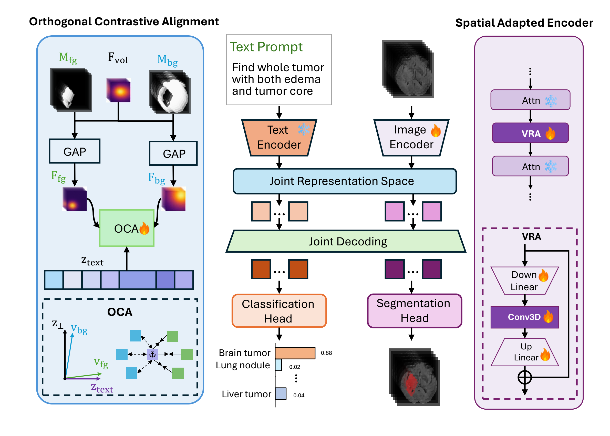
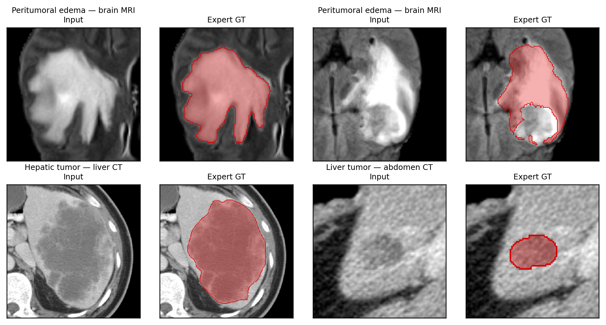

Accurate 3D tumor segmentation is fundamental for precision oncology, yet remains challenging due to the heterogeneity of tumor morphology across imaging modalities. Existing foundation models either lack volumetric awareness, processing 3D data as independent 2D slices, or rely on labor-intensive geometric prompts such as bounding boxes. We propose OmniTumor, a vision-language foundation model for text-driven 3D tumor segmentation across CT and MRI. Our framework introduces two key components: a Spatial Adapted Encoder that injects volumetric spatial context into a frozen 2D backbone via lightweight 3D adapters, and an Orthogonal Contrastive Alignment module that calibrates visual features against text embeddings by enforcing geometric orthogonality between foreground and background prototypes. We curate OmniTumorData, a large-scale collection of 11,326 subjects (~289K axial slices) drawn from 12 public cohorts spanning brain, abdominal, hepatic, and thoracic tumors across CT and MRI.
A slice-to-batch reshape feeds a 3D volume through a frozen 2D Transformer; Volumetric Residual Adapters with a depth-wise 3×1×1 convolution are inserted between frozen blocks to re-inject inter-slice context without the quadratic cost of full 3D self-attention.
A training-only objective that pulls foreground prototypes onto the text embedding while constraining background prototypes to its null space, avoiding the spurious anti-prompt signature that conventional contrastive losses encode.
Sub-region distinctions (necrotic core / edema / enhancing tumor; abdominal vs. mediastinal lymph nodes; etc.) are preserved end-to-end and augmented language-side via a synonymous prompt pool.
A square-root → proportional → square-root schedule keeps small cohorts from being drowned out by larger cohorts during training.
A large-scale benchmark spanning brain MRI and abdominal, hepatic, and thoracic CT, with text-promptable tumor and sub-region targets.

@article{omnitumor2026,
title = {A Spatial Vision-Language Foundation Model for Universal Volumetric Tumor Segmentation},
author = {Zhao, Songlin and Sun, Lichao and He, Lifang and Liu, Wei},
year = {2026}
}